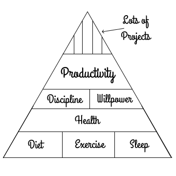

The Perfect Schedule
I used to think that my lack of productivity was a result of poor time management, lack of discipline, an absence of willpower, maybe all three. I became obsessed with this idea that the perfect schedule would solve all three of those problems:
- Keep me disciplined
- Manage my time for me
- Remove my need for willpower
I told myself that if I came up with the perfect schedule, and I forced myself to follow it, then time would manage itself. I could just rely on the schedule, and willpower would become superfluous. Following a schedule like that would solve my procrastination problem. You know that problem where you know you need to do something, but you find a million ways to avoid it until you absolutely have to do it.
My schedule would account for every minute, not leaving any time to even start procrastinating, forcing me to go from task A to task B to task C, so I never lost focus. The evil forces of procrastination could never creep into such a schedule.
Here's what I thought perfection looked like defined in perfect 30 minute chunks:
Weekdays
| AM | Activity |
|---|---|
| 05:00 | Awake, Meditate, Stretch |
| 05:30 | Workout |
| 06:00 | |
| 06:30 | Breakfast, Shower |
| 07:00 | Study |
| 07:30 | |
| 08:00 | |
| 08:30 | Travel to Work |
| 09:00 | Work |
| 09:30 | |
| 10:00 | |
| 10:30 | |
| 11:00 | |
| 11:30 | |
| 12:00 | |
| 12:30 | Lunch |
| PM | Activity |
|---|---|
| 01:00 | Work |
| 01:30 | |
| 02:00 | |
| 02:30 | |
| 03:00 | |
| 03:30 | |
| 04:00 | |
| 04:30 | |
| 05:00 | |
| 05:30 | Travel Home |
| 06:00 | Dinner, Reading |
| 06:30 | Study |
| 07:00 | |
| 07:30 | Leisure |
| 08:00 | |
| 08:30 | Read, Sleep |
Breakdown of Time
My schedule would also quantify how much time per week, both in raw minutes and hours, and by percentage, that I was spending on each area of interest. By categorizing my activities in this way, I thought I could use potato chip heuristics, like 20 hours to learn a new skill or 10,000 hours to become an expert, to predict my future accomplishments:
| Activity | Hrs/Day | Hrs/Week | % |
|---|---|---|---|
| Exercise | 1 | 5 | 6.45% |
| Study | 2.5 | 12.5 | 16.13% |
| Leisure | 1 | 5 | 6.45% |
| Work | 8 | 40 | 51.61% |
| Travel | 1 | 5 | 6.45% |
| Eating | 1.5 | 7.5 | 9.68% |
| Reading | 0.5 | 2.5 | 3.23% |
I believed that I could take my schedule above, knowing how many hours a week I could spend on an activity, and then forecast when I'd be an expert (using the mythical 10,000 hour rule). As an example, if I used my study time to play the piano, then at 12.5 hours/week, I forecasted that I'd be an expert pianist in 800 weeks.
That's 15 years.
That revelation was incredibly depressing, but I was still committed to trying the schedule. The stakes are big for procrastinators. You're losing your most precious resource: time, and I was tired of losing.
I was willing to try anything.
Execution
I was able to follow The Perfect Schedule for three weeks without disruption. Every day I would wake up before the sun, meditate, stretch, then head to my apartment's gym to run and lift weights. I ate clean, healthy breakfasts, studied before work, and then enjoyed my morning commute replaying elements of what I just learned that morning.
It was divine.
I would work, come home, prepare dinner and then read, study some more, and then go to bed. It was hard, because I hadn't built time in for regular every day things like talking with friends, calling my parents, even just using the washroom. Still though, every night, I felt like I had kicked procrastination's ass, and it felt good.
For three weeks, it was glorious.

But then something happened. We had a fire at work. I had to stay late to put it out. I didn't like losing discipline for one day, but I knew it was just one day. I didn't sleep well, because I was stressed about not following my schedule.
It was hard to roll out of bed the next morning, so I slept in.
I woke up at 8:00, cursed myself for starting the day wrong, and went to work in a bad mood.
Seeing my sour mood, my coworkers recruited me to attend happy hour the next day. But I was torn. I had my evening routine. I had already messed up the morning, and if I joined happy hour, it'd be my second day of not following the schedule.
I declined the offer and went home to study, read, and sleep instead.
When I got home though, I felt even worse for missing out on a happy hour with my friends. I ended up watching YouTube for hours instead of following the schedule. At the end of the night, right before midnight, I had a sudden panic that I hadn't met my goals for the day. I ended up staying awake until 2 am studying, so I could at least pretend that I was meeting that day's study goal.
Three hours later, my 5:00 am alarm went off. I snoozed it immediately.
I woke up late, again. I beat myself up even more.
What was wrong with me? Why couldn't I maintain the schedule? This was the old me creeping back in again. The procrastinator. The 30-something-year-old that hadn't accomplished anything noteworthy in life.
It felt like I was staring into the abyss of lost time again, without any hope at all.
That was a Friday though, and with the weekend upon me, I knew I had a chance to reset. All I had to do was meal preparation on Sunday, so I could eat healthy food in the efficient 30 minute blocks I had carved out during my weekday schedule. Since it was Friday though, why not reward myself? I had a hamburger, french fries, and a chocolate milkshake for lunch.
I had plans for the weekend though. I was going to learn a new technology that night to get my anti-procrastination powers flowing. But the sugary and fatty food from lunch weighed on me. It made me sleepy and sluggish.
When I got home, I ended up switching between Reddit, HackerNews, and YouTube, trying to forget that I had cheated at lunch, that I wasn't learning that new technology I had committed to learn that night, or that something stressful had happened at work. The infinite scroll powered feed of cheap dopamine dazzled my eyes, charmed my ears, and lulled my brain into thinking I was happy.
I had wasted my Friday and only completed 1/2 of that week's perfect schedule. I fell asleep depressed.
Failure
The rest of the weekend was a blur.
I found myself listening to a podcast while reading an article, or watching a YouTube video while simultaneously trying to code. I thought multi-tasking was the trick to my procrastination problem. Maybe, if I did twice the things over the weekend, I could catch up from last week's failings.
Sunday came and went without any meal preparation happening.
Monday arrived and my mood was dark. I hadn't gone grocery shopping or prepared anything by way of a healthy breakfast. I skipped the gym. I read Reddit instead of studying. I glumly went into work, knowing I had failed again.
I was off The Perfect Schedule.
I quickly faded back into my old habits: cheap dopamine, veil of happiness, and deep inborn sadness.
Time burning.

What Went Wrong?
Looking back on that experience, knowing what I know now, all of my missteps are so clear. I know exactly why I failed at observing The Perfect Schedule. I now affectionately refer to it as The Insane Schedule, because its rigidity and inflexibility made it incredibly brittle. If I messed up once, I would beat myself up for failing. You could also call it The Inhuman Schedule, because it left no time for being a real human: having a social life, friends and family, even just using the washroom.
What I realized was that when I failed, those dark feelings that accompanied my perceived misstep, that utter unwillingness to forgive myself, those were the roots and true source of my procrastination.
It's a little more complicated though. To dig into my parable, I want to first go over what I thought were the ingredients of productivity. In crafting my crazy schedule, I had built a pyramid of false presumptions.
A Pyramid of False Presumptions
I thought that, like a food pyramid, productivity was built on a bunch of ingredients. If you brought all of the ingredients and stacked them on top of one another, then at the apex, you could do great things. The problem is that my perception of productivity was built on flawed assumptions. Here's where I imagined productivity came from:
Diet, Exercise, Sleep
At the base layer, I knew that you had to maintain a healthy body and mind to be productive. I thought the key ingredients were diet, exercise, and sleep. Most importantly, I drew my pyramid above with each of them as the same sized foundational bricks, because I thought that they were equally important. You had to do all three in order to be productive.
But even though I knew these things, the first thing I did in life (and in the parable above) is sacrifice my sleep. Have you ever thought you were falling behind on a project, so you stayed up late to try and catch up? Maybe you pulled an all nighter?
What happened after I gave up my sleep?
Everything else toppled. I started eating badly. I ended up skipping my workouts. I felt bad about myself. I misunderstood how important sleep is as a foundational element of health. If you can only do one of the three healthy habits, then you should always sleep.
Discipline, Willpower
After achieving physical health, I thought the next ingredients applied were discipline and willpower (I also foolishly thought these were equal as well). If you wanted to be productive, you had to have the discipline to just force yourself to do it, regardless of how you felt. You had to use your willpower to stay on task and ensure you were getting your work done.
How you felt, emotionally, didn't matter. You're a human. You have reason and logic. You just have to adhere to willpower, maintain discipline, and great things will follow. Right? Isn't procrastination just the product of a weak mind?
These were my foolish beliefs.
Productivity
Finally, with discipline and willpower stacked on top of health, which was composed of diet, exercise, and sleep, I believed that one could achieve the magical word: productivity. To me, productivity meant being able to accomplish a bunch of things at once. If I was productive, I could take on 5-10 projects at the same time.
I'm here to tell you that all my beliefs were wrong.
It has taken me years, but I finally figured out how to fix it.
How to Fix It